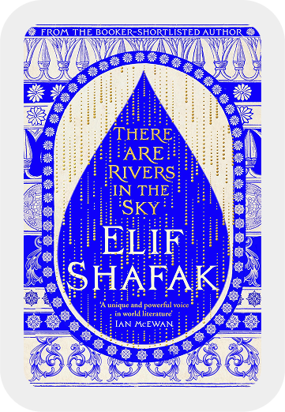
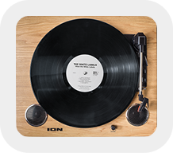

Selected work
Evolving critical financial flows without disrupting users - maintaining churn at 4.2%
Selfwealth by Syfe · 2025-26
Making a case management platform role-aware and increasing adoption by 80%
CloudLex · 2024
0 → 1 design of a retrieval platform that reduced turnaround times by 40%.
RecordXtract · 2023
About
I’m a Product Designer with 4+ years of experience building B2B and B2C products with teams at big tech companies, unicorns, and stealth startups worldwide.
Currently, I’m building Selfwealth — empowering more than 130K investors across Australia to trade with greater confidence and ease.
I care deeply about my craft — doing what it takes, and obsessing over the details until it makes an experience feel just right.
BEYOND THE WORK :)

READING
TYPE EXPERIMENTS

MUSIC
TENNIS :)
MY STACK
Reach out for full-time jobs, freelance projects, design advice or just to say hi!